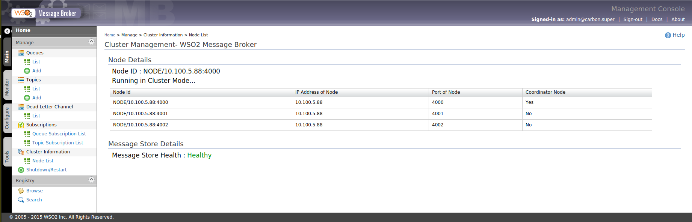

When WSO2 Message Broker is running in clustered mode queues and topic subscriptions are distributed. Although This is transparent to the user, he may need to know what are the nodes in the cluster and the node details. Cluster management feature is there to address that aspect of usability.
Following capabilities are provided under Cluster Management:
This section shows the node details of the current node. Node details include the IP address of the running node and the port used for cluster communication.
This section shows which mode the current MB node is running. Running mode can be either standalone or cluster mode.
Cluster node information is displayed in a table which contains each member of the cluster in a separated raw. The details of each node contain the node id, the IP address, the port used for cluster communication and whether each node acts as the cluster coordinator.
This section shows whether the store is operational or not.

Figure 1: Node Details and Store Status